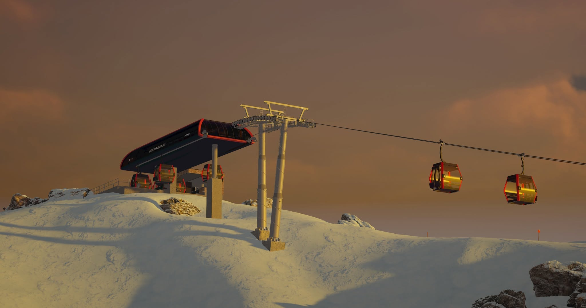
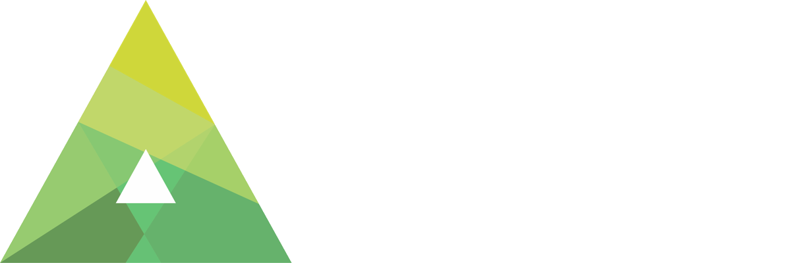
Alpin 3D Design – kostenlose Mods für den Winter Resort Simulator und den Skiregion Simulator
Download
Winter Resort Simulator
Mods für WRSDownload
Skiregion Simulator
Mods für SRSSo entsteht eine Mod
Unser Workflow folgt der klassischen Asset-Pipeline der Spieleentwicklung – von der Referenz bis zum Release.
Referenz
Am Anfang steht das Original: Fotos, Pläne, Maße und Datenblätter werden gesammelt, damit Proportionen und Details später stimmen.
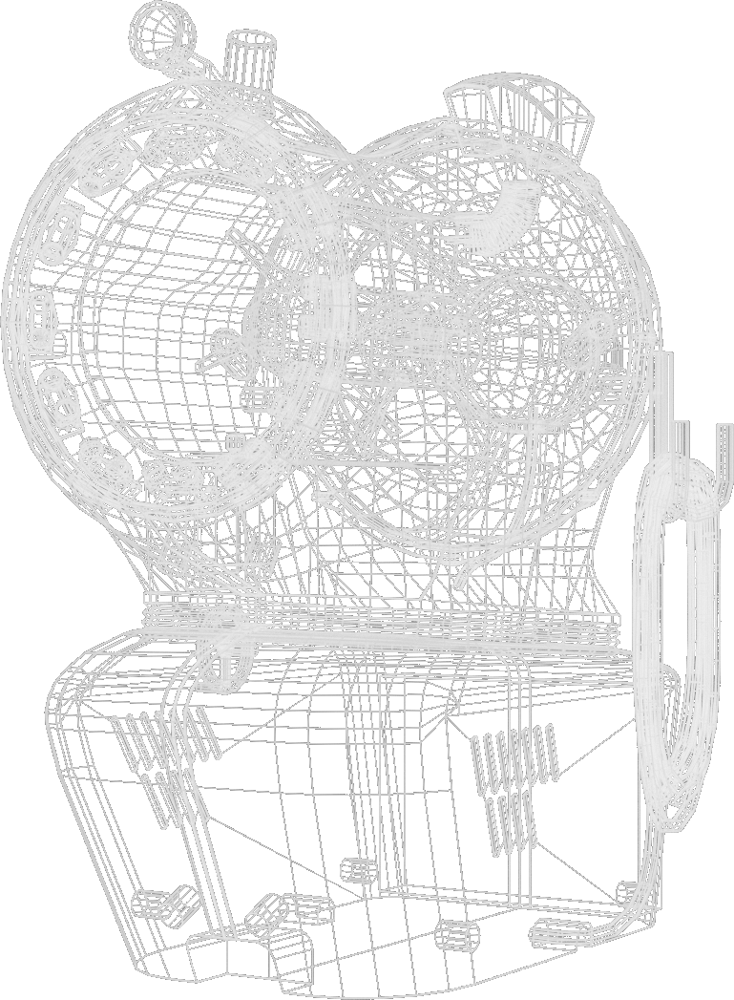
Modellierung
Aus Dreiecken entsteht das Mesh. Dabei achten wir auf ein sauberes Polygonbudget, damit das Modell auch in großen Skigebieten flüssig läuft.
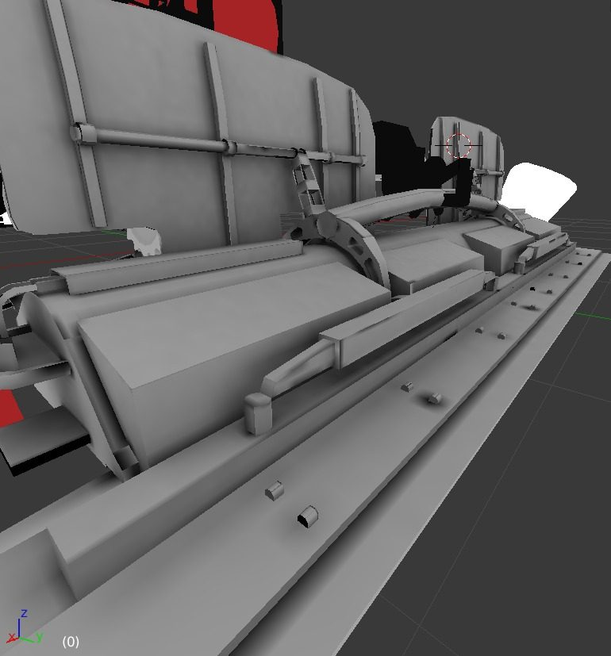
Detail & Rigging
Bauteile werden getrennt, Pivot-Punkte gesetzt und bewegliche Teile für Animationen vorbereitet – etwa Klappen, Fräsen oder Lüfter.
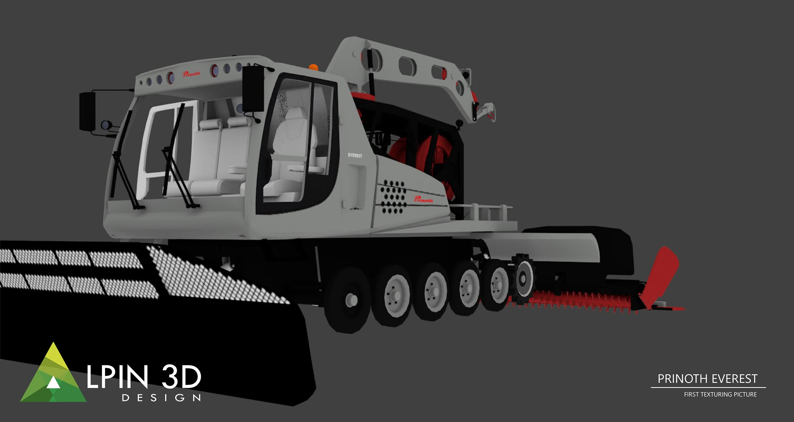
UV & Texturen
Das Modell bekommt Farbe und Struktur. Dazu kommen LOD-Stufen und Kollisionsmodelle für Performance und Physik.
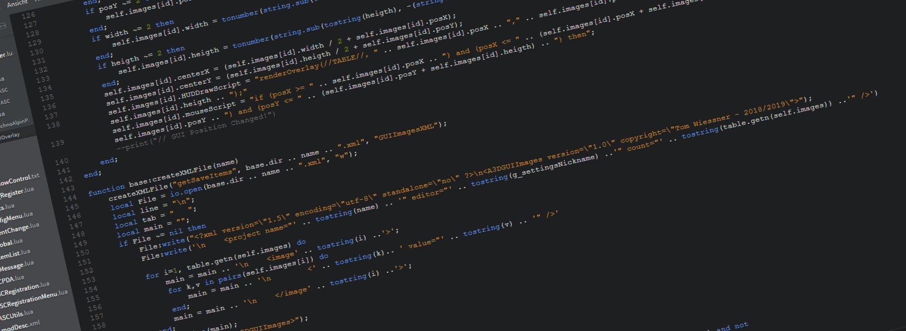
Integration & Scripting
Export ins Spielformat, Konfiguration und Scripts: Erst durch Lua-Code werden Schalter, Lichter und Beschneiung im Spiel bedienbar.
Testing
Unsere Beta-Tester prüfen jede Mod im Spiel – auf Fehler, Performance und Bedienbarkeit. Gefundene Bugs gehen zurück ins Development.
Release
Screenshots, Trailer und Ankündigung – dann geht die Mod kostenlos online, für den Winter Resort Simulator oder den Skiregion Simulator.
Unsere Projekte
Eine Auswahl unserer Mods für den Winter Resort Simulator und den Skiregion Simulator.
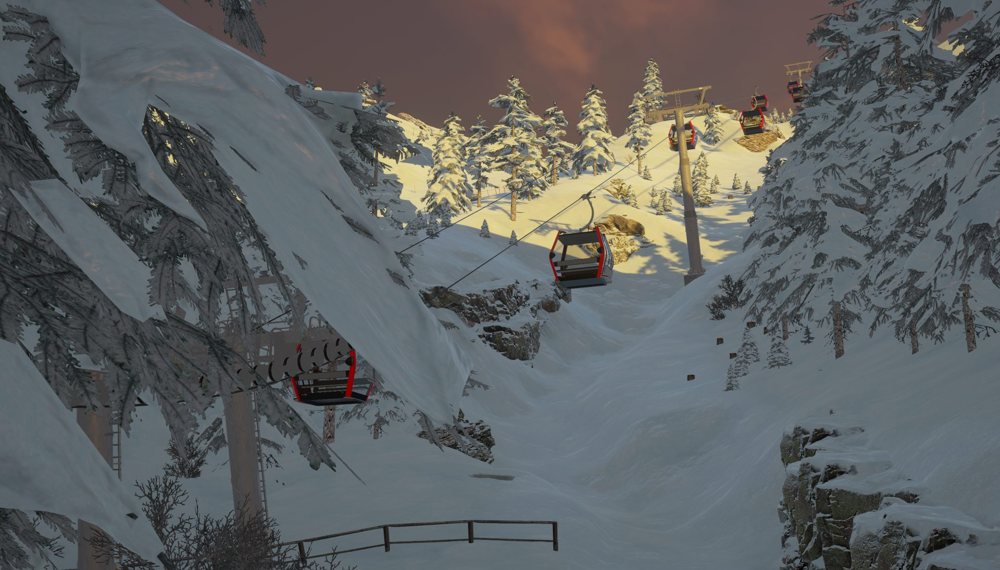
Seilbahnen
LEITNER Ropeways
Mit der ersten Leitner Sessel- und Kabinenbahn für den WRS auf den Berg schweben. Bis ins Detail nach dem Original.
Fahrzeuge & Schneeerzeuger
A3D SNOW.Management
Detailgetreue Pistenfahrzeuge und Schneekanonen der Firma Prinoth, Sufag, Techno Alpin und Lenco.
Beschneiung
Techno Alpin Pack
Unser bis heute größtes Beschneiungsmodpack für den Skiregion Simulator – mit allen Flagschiffen der Firma Techno Alpin.
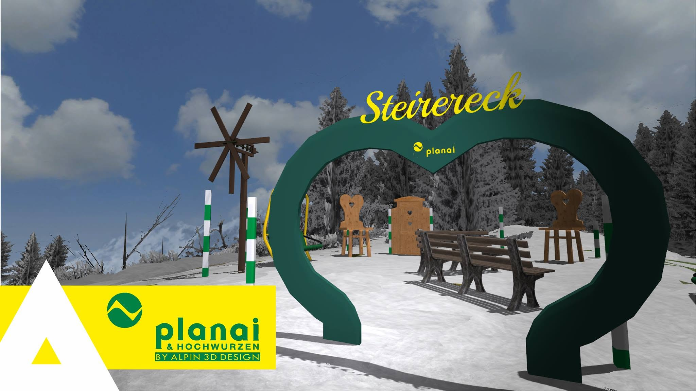
Maps
Planai AddOn
Der Planai AddOn erweitert die Skiregion mit einer detaillierten Darstellung der Schladminger Planai und des Planai Beast.
Geschichte
-
2013
LSBrandi und AMC Modding werden durch Thomas Brandl gegründet. Das Ziel: die realitätsnahe Nachbildung der Schladminger Planai!
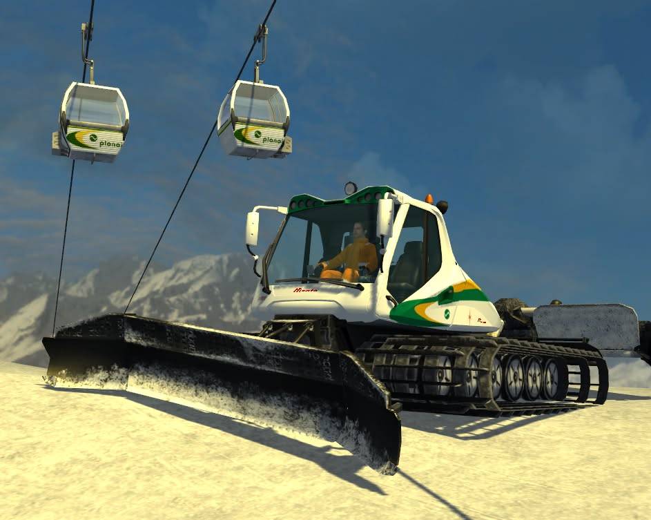
-
2014
Die Planai wächst weiter und immer mehr Leute arbeiten an dem ambitionierten Projekt der einzigen realen Nachbildung eines Skigebiets im Skiregion Simulator von Giants Software mit. Wir durften Veit und Simon im Team willkommen heißen.
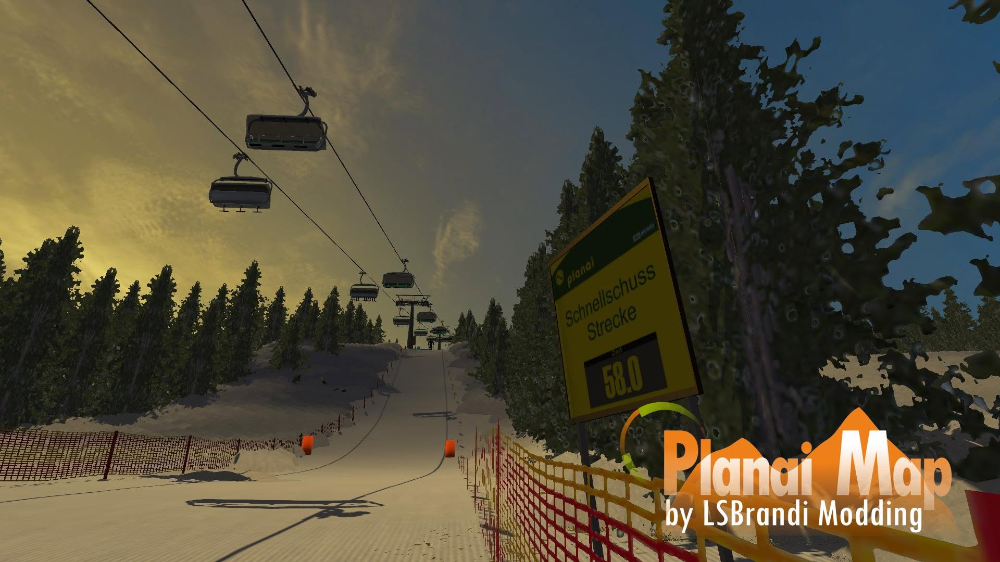
-
2015
Das erste TF10 Pack wird released und bildet damit den Grundstein für das zukünftige Techno Alpin Pack. Auch die erste Map von LSBrandi Modding, Grosseck, geht online. Ganz nebenbei beginnen Modder des weltbekannten Mountain Modding Teams die Projekte des Herrn Brandl zu unterstützen. Dadurch kamen Sevi, Nick, Tim und Tom ins Team.
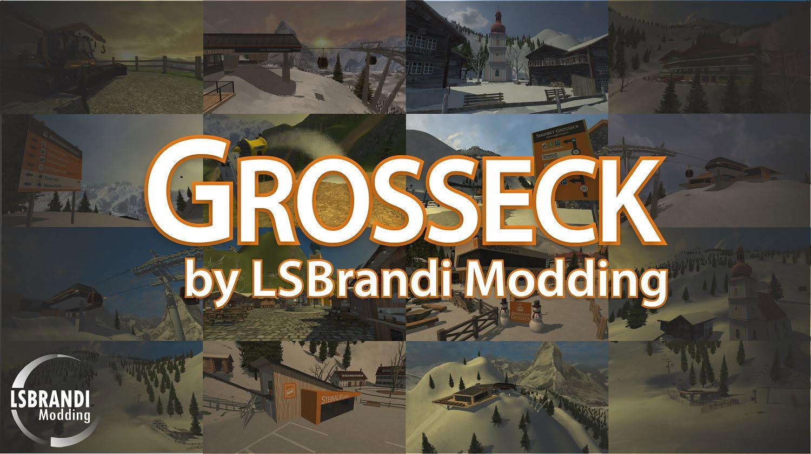
-
2016
Der Prinoth Everest erscheint als 2. Prinoth-Pistenfahrzeug für den SRS, kurz darauf die erste frei platzierbare Gemini Schneilanze. Das Sufag Compact Power Pack bringt erstmals Sufag Schneeerzeuger ins Spiel. Nach einer Umstrukturierung im Team wird aus LSBrandi und AMC Modding endgültig Alpin 3D Design. Unser Know-How im Bereich Modelling stieg durch Max und Machi erheblich und auch unsere Schneekanonen bekamen erstmalig selbst entwickelte Funktionen. Es folgt das bis heute größte Beschneiungsmodpack für den SRS, das Techno Alpin Pack – und am letzten Tag des Jahres die erste Betaversion der im Jahr 2013 begonnenen Planai.
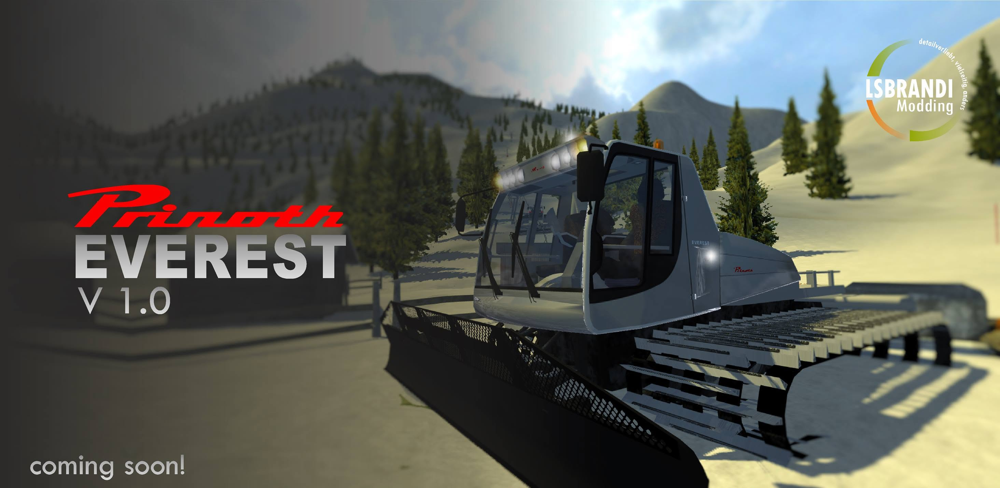
-
2017
Das Projekt Brunn mit der ersten Leitner 3S Seilbahn wird bekannt gegeben. Außerdem entsteht mit dem Snow.Manager erstmals eine Software, die unabhängig vom SRS arbeitet und den Saisonwechsel enorm erleichtert. Außerdem starteten wir in eine Entwicklung, die wir nie finalisieren werden: Artificial Snow Control, kurz ASC. Als Beschneiungsmanagementsystem sollte dieser Skriptmod eine realistische Beschneiung durch zentrale Ansteuerung, Wetter, Pumpstationen und realistischer Bedienung aller auch nicht hauseigener Schneeerzeuger ermöglichen. Der Winter Resort Simulator als Nachfolger des SRS erschien jedoch früher.
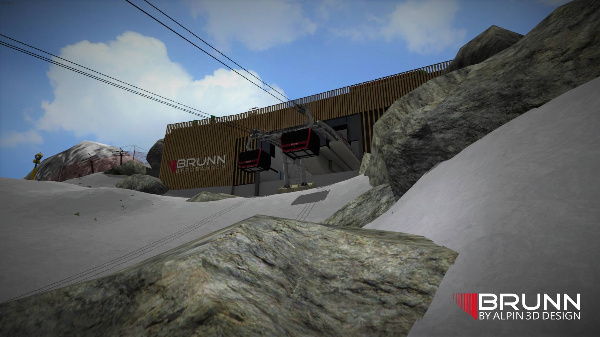
-
2018
Mit einem Livestream wird das Jahr eingeläutet: 6 Jahre LSBrandi Modding & Alpin 3D Design. Noch nie liefen so viele Projekte gleichzeitig. Wir veröffentlichten ein großes Update für das Sufag Pack mit der Peak und sämtlichen Turmvariationen. Ebenfalls enthalten war die erste Auskopplung aus unserem ASC, das realistische Startverhalten einer Schneekanone. Eine weitere Map erblickte das Licht der Welt: Edelsee und mit ihr auch unsere erste eigene Seilbahnsteuerung RWC. Zusammen mit Snowman73 schafften wir es, am Ende des Jahres das Techno Alpin Lanzenpack allen kostenfrei zum Download zur Verfügung zu stellen.
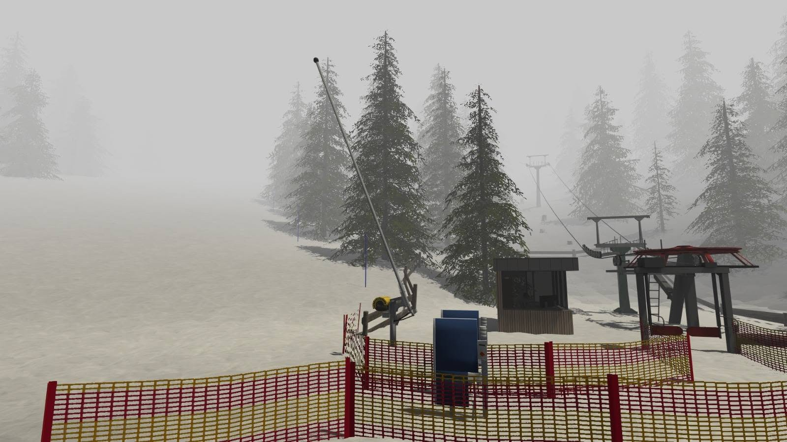
-
2019
Während es in der Branche einiges an Unruhe aufgrund eines neu angekündigten Simulationsspiels gab, entwickelten wir eifrig weiter an Edelsee, unserer Schneekanonensteuerung ASC als auch unserer neuen Seilbahnsteuerung RWC. Im Februar konnten wir dadurch das erste Mal eine Leitner Telemix Anlage realisieren. Speicher- & Multiplayerfähig natürlich from scratch!
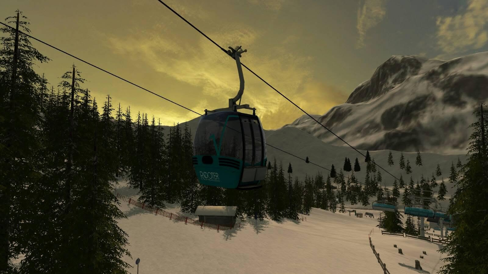
-
2020
In diesem Jahr war es dann nun soweit: Der WRS war draußen, die Moddingtools ebenfalls und somit veröffentlichten wir zusammen mit dem SRTD unser bekanntes Sufag Pack aus dem SRS auch hier. Natürlich mit selbigem Funktionsumfang. In den nachfolgenden Jahren wurde dieses immer weiter durch Schneeerzeuger der Firma Techno Alpin und Lenco sowie Pistenfahrzeuge der Firma Prinoth erweitert, sodass schnell eine Umbenennung in A3D SNOW.Management erfolgte. Inzwischen ist dieser Mod mit aktuell knapp 25.000 Abonnenten und 5 Sternen der am häufigsten heruntergeladene Mod für den Winter Resort Simulator 2. Außerdem wurde durch Roby unser Prinoth Pack für den SRS signifikant erweitert.
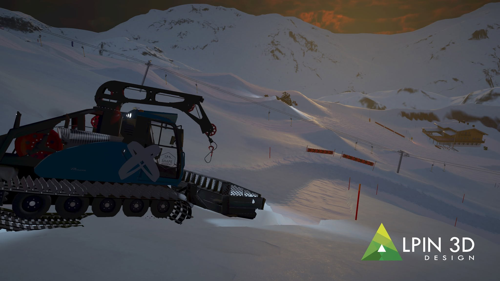
-
2021
Neben den zahlreichen Updates unseres SNOW.Management Packs machte sich ein Team an ein Update unserer 2016 veröffentlichten Map Grosseck. Die damals werbewirksam auf der Karte angekündigten Großinvestitionen in den Ausbau des Skigebiets wurden damit Realität. Die Map bekam einen ganz neuen Abschnitt hinzu: die Hochalm. Dieses Update wird wohl unsererseits die letzte Veröffentlichung für den Skiregion Simulator bleiben. Gleichzeitig bleibt dies damit auch die einzige Anwendung unserer eigenen Seilbahnsteuerung, auf die wir knapp 8 Jahre lang hingearbeitet haben.
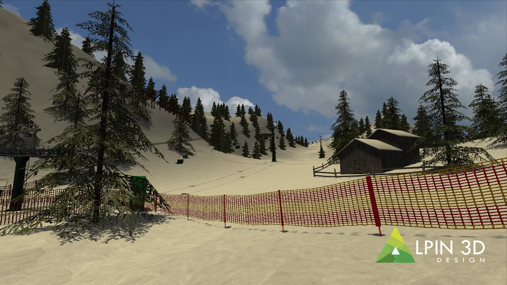
-
2026
In den darauffolgenden Jahren pflegten wir unser A3D SNOW.Management weiter und portierten es in den WRS Season 2. Gleichzeitig warteten wir auch gespannt auf die ersten Modder, die den 2. großen Seilbahnhersteller Leitner Ropeways aus Südtirol in das Spiel bringen. Nachdem dies doch eine ganze Zeit lang nicht passierte, entschlossen wir uns aufgrund der Tatsache, dass wir nunmehr seit 10 Jahren Leitner in der Simulation vertreten lassen, dies auch für den WRS 2 zu tun. In den Jahren entstanden, getrieben durch Dominik, Georg und Niklas zwei Sessellifte unterschiedlichster Bauserien, die wir zusammen mit unserer Implementierung der LEITCONTROL Steuerung Anfang des Jahres veröffentlichen konnten. Ende 2026 folgte nun, getrieben durch Stefan und Baisi, auch die Erweiterung um zwei Kabinenbahnen.
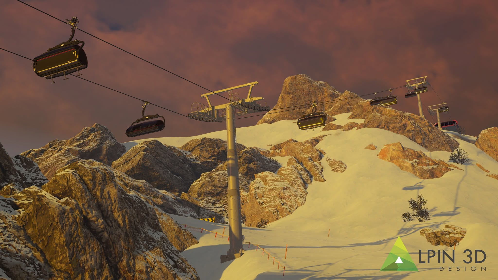
Das Team
Ehrenamtlich, mit Leidenschaft für Skigebietstechnik und Simulationen: die Menschen hinter unseren Mods.
Development
Teamlead | Software Coding & Architecture
Tom
ToWi48
- Dabei seit
- 2015
Ingaming | 3D-Artist
Guillaume
TheSnowman73
- Dabei seit
- 2017
Ingaming | 3D-Artist
Dominik
Dominik1503
- Dabei seit
- 2021
Ingaming | 3D-Artist
Georg
phoenix_07
- Dabei seit
- 2020
3D-Artist | Marketing
Stefan
sthmaus
- Dabei seit
- 2022
3D-Artist
Niklas
Auf_Zack
- Dabei seit
- 2022
Ingaming | 3D-Artist
Roby
robyb19
- Dabei seit
- 2020
Ingaming | 3D-Artist
Baisi
Basement Gaming
- Dabei seit
- 2026
Marketing | Validation
Validation | 3D-Artist
Lorenz
Wolf
- Dabei seit
- 2021
Validation
Maximilian
Plazi
- Dabei seit
- 2020
Validation
Julius
juliush77
- Dabei seit
- 2026
Validation | Marketing
Ole
ole9240
- Dabei seit
- 2026
Validation
Yannick
pistenbully
- Dabei seit
- 2026
Stammteam
Founder | Mapping | 3D-Artist
Thomas
LSBrandi
- Dabei seit
- 2013
3D-Artist
Severin
Sevi/Tarzan
- Dabei seit
- 2015
3D-Artist
Mika
mango6278
- Dabei seit
- 2020
Mapping
Nick
nickpucker
- Dabei seit
- 2015
3D-Artist | Mapping
Daniel
Schleppi
- Dabei seit
- 2017
3D-Artist
Noah
noahwerker
- Dabei seit
- 2020
Coding
Tim
tim_a3d
- Dabei seit
- 2015
3D-Artist | Ingaming
Playgamer
playgamer76
- Dabei seit
- 2021
3D-Artist
Daniel
Machi
- Dabei seit
- 2014
3D-Artist
Max
Max S.
- Dabei seit
- 2014
3D-Artist | Admin
Mika
Mango6278
- Dabei seit
- 2021
3D-Artist | Coding
Veit
Modder_SRS
- Dabei seit
- 2014
Validation
Julian
jbachler04
- Dabei seit
- 2018
Validation
Christian
SeilbahnerTV
- Dabei seit
- 2018
Wir suchen dich
Lust, mitzubauen?
Wir suchen dringend Leute, die Bock haben, mit uns coole, neue Pistenfahrzeuge & Seilbahnen in Skigebietssimulationen zu bringen. Wenn du auch Bock hast, komm gern zu uns. Wir bauen gern auf deinen Grundkenntnissen auf und helfen dir, dich weiterzuentwickeln!
So einfach geht’s
- Schreib uns – kurz, wer du bist und was dich reizt - via Discord, Social Media oder E-Mail.
- Lockeres Kennenlernen auf Discord, wo du merkst, wie wir ticken.
- Loslegen – mit einem kleinen Einstiegsprojekt oder direkt an unseren Flagschiffen mit einem von uns an deiner Seite.
Kontakt
Fragen zu einer Mod, Bug gefunden oder Lust, im Team mitzuarbeiten? Schreib uns.
Social Media
Neue Releases, Previews und Livestreams zuerst erfahren.
Unterstützen
Alle unsere Mods sind und bleiben kostenlos. Wenn dir unsere Arbeit gefällt, freuen wir uns über einen Kaffee – er hält die nächtlichen Sessions und unsere Homepage am Laufen.
Kaffee spendierenSicher über PayPal · freiwillig und ohne Gegenleistung